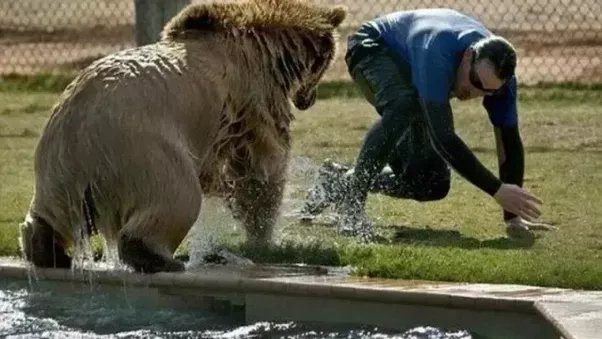
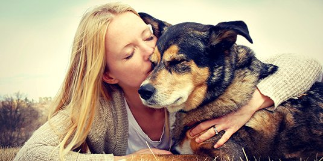
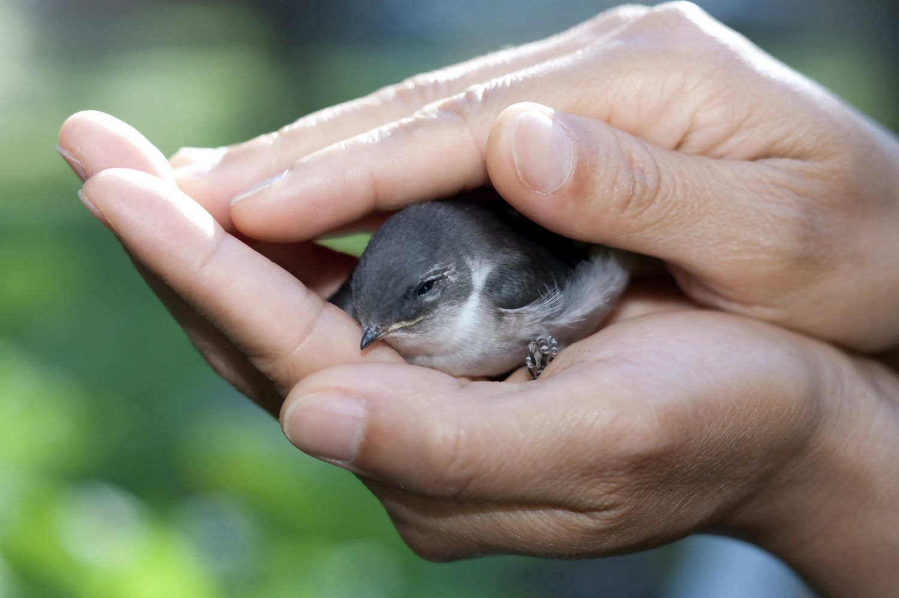

HOW TO APPROACH AN INJURED ANIMAL

Protecting Yourself
Stay away from dangerous animals. If you come across an injured animal that could cause you serious harm, such as a bear, a wolf, or a snake, do not approach it! In this case, it's best to leave the rescue up to the professionals. Stay at a safe distance and call your local animal control office. If they can't help you, they should be able to refer you to someone who can.

Making the Animal Feel Safe
the animal slowly. When approaching an animal, keep in mind that the animal does not know you and does not know why you are approaching. Whether you are dealing with a wild animal or a domestic animal, it's important to move very slowly in order to avoid scaring it.

Catching the Animal and Getting Help
Coax the animal into a carrier or box. If the animal is very tame and/or not very mobile, you may be able pick it up and place it in a cat carrier or cardboard box. If the animal will not let you pick it up, you can try using food to help coax it into the carrier.[8] Place a towel or blanket in the carrier or box to make it more comfortable. If you are using a box, make sure it is ventilated.
CALL FOR HELP
Call for help. If you can't get the animal to a vet yourself, call for help as soon as you've done everything you can to restrain the animal or get it away from danger. Your local animal control agency will be able to handle the situation from here.[14] If you don't have an animal control agency in your area, call the police. You might also consider calling a wildlife rehabilitator if you can find one in your area.
BRING THEM TO SAFE PLACE
Bring the animal to a vet or shelter. If you have successfully caught the animal and are able to transport it, make sure to get it medical help right away. Depending on the type of animal it is and your location, you may have the option of taking it to a shelter or a vet.
COVER THE INJURED ANIMAL
Cover large animals that can't be moved. If the injured animal is too large to be placed in a carrier and you cannot get it into your car, do what you can to make it more comfortable while you call for help. Covering the animal with a blanket, towel, or article or clothing will help keep it warm.